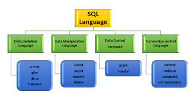

RUBY is a dynamic, open source programming language with a focus on simplicity and productivity. It has an elegant syntax that is natural to read and easy to write. Ruby is an interpreted, high-level, general-purpose programming language which supports multiple programming paradigms. It was designed with an emphasis on


SQL means Structured query language, is a standard language for database creation and manipulation. MySQL is a relational database program that uses SQL queries. Structured query language (SQL) is a programming language for storing and processing information in a relational database. A relational database stores information in tabular form, with rows and columns representing different data attributes and the various relationships between the data values. You can use SQL statements to store, update, remove, search, and retrieve information from the database. You can also use SQL to maintain and optimize database performance.
